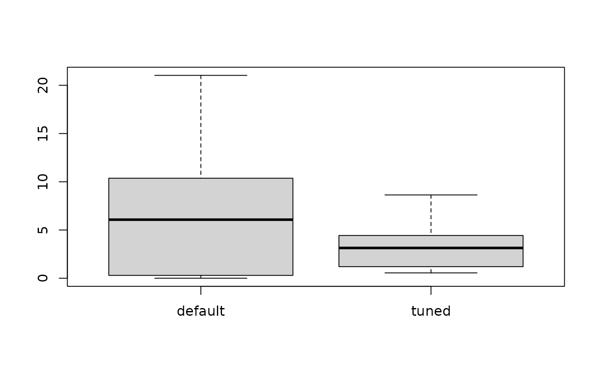

irace implements iterated Race. It receives some parameters to be tuned
and returns the best configurations found, namely, the elite configurations
obtained from the last iterations (and sorted by rank).
Arguments
- scenario
(
list())
Data structure containing irace settings. The data structure has to be the one returned by the functiondefaultScenario()orreadScenario().- parameters
(
list())
Data structure containing the parameter space definition. The data structure has to similar to the one returned by the functionreadParameters.
Value
(data.frame)
A data frame with the set of best algorithm configurations found by irace. The data frame has the following columns:
.ID.: Internal id of the candidate configuration.Parameter names: One column per parameter name inparameters..PARENT.: Internal id of the parent candidate configuration.
Additionally, this function saves an R data file containing an object called
iraceResults. The path of the file is indicated in scenario$logFile.
The iraceResults object is a list with the following structure:
scenarioThe scenario R object containing the irace options used for the execution. See
defaultScenariofor more information.parametersThe parameters R object containing the description of the target algorithm parameters. See
readParameters.allConfigurationsThe target algorithm configurations generated by irace. This object is a data frame, each row is a candidate configuration, the first column (
.ID.) indicates the internal identifier of the configuration, the following columns correspond to the parameter values, each column named as the parameter name specified in the parameter object. The final column (.PARENT.) is the identifier of the configuration from which model the actual configuration was sampled.allElitesA list that contains one element per iteration, each element contains the internal identifier of the elite candidate configurations of the corresponding iteration (identifiers correspond to
allConfigurations$.ID.).iterationElitesA vector containing the best candidate configuration internal identifier of each iteration. The best configuration found corresponds to the last one of this vector.
experimentsA matrix with configurations as columns and instances as rows. Column names correspond to the internal identifier of the configuration (
allConfigurations$.ID.).experimentLogA matrix with columns
iteration,instance,configuration,time. This matrix contains the log of all the experiments that irace performs during its execution. The instance column refers to the index of thescenario$instancesListdata frame. Time is saved ONLY when reported by thetargetRunner.softRestartA logical vector that indicates if a soft restart was performed on each iteration. If
FALSE, then no soft restart was performed.stateA list that contains the state of irace, the recovery is done using the information contained in this object.
testingA list that contains the testing results. The elements of this list are:
experimentsa matrix with the testing experiments of the selected configurations in the same format as the explained above andseedsa vector with the seeds used to execute each experiment.
Details
The function irace executes the tuning procedure using
the information provided in scenario and parameters. Initially it checks
the correctness of scenario and recovers a previous execution if
scenario$recoveryFile is set. A R data file log of the execution is created
in scenario$logFile.
See also
irace.main()a higher-level interface to
irace().irace.cmdline()a command-line interface to
irace().readScenario()for reading a configuration scenario from a file.
readParameters()read the target algorithm parameters from a file.
defaultScenario()returns the default scenario settings of irace.
checkScenario()to check that the scenario is valid.
Examples
if (FALSE) {
# In general, there are three steps:
scenario <- readScenario(filename = "scenario.txt")
parameters <- readParameters("parameters.txt")
irace(scenario = scenario, parameters = parameters)
}
#######################################################################
# This example illustrates how to tune the parameters of the simulated
# annealing algorithm (SANN) provided by the optim() function in the
# R base package. The goal in this example is to optimize instances of
# the following family:
# f(x) = lambda * f_rastrigin(x) + (1 - lambda) * f_rosenbrock(x)
# where lambda follows a normal distribution whose mean is 0.9 and
# standard deviation is 0.02. f_rastrigin and f_rosenbrock are the
# well-known Rastrigin and Rosenbrock benchmark functions (taken from
# the cmaes package). In this scenario, different instances are given
# by different values of lambda.
#######################################################################
## First we provide an implementation of the functions to be optimized:
f_rosenbrock <- function (x) {
d <- length(x)
z <- x + 1
hz <- z[1:(d - 1L)]
tz <- z[2L:d]
sum(100 * (hz^2 - tz)^2 + (hz - 1)^2)
}
f_rastrigin <- function (x) {
sum(x * x - 10 * cos(2 * pi * x) + 10)
}
## We generate 20 instances (in this case, weights):
weights <- rnorm(20, mean = 0.9, sd = 0.02)
## On this set of instances, we are interested in optimizing two
## parameters of the SANN algorithm: tmax and temp. We setup the
## parameter space as follows:
parameters_table <- '
tmax "" i,log (1, 5000)
temp "" r (0, 100)
'
## We use the irace function readParameters to read this table:
parameters <- readParameters(text = parameters_table)
## Next, we define the function that will evaluate each candidate
## configuration on a single instance. For simplicity, we restrict to
## three-dimensional functions and we set the maximum number of
## iterations of SANN to 1000.
target_runner <- function(experiment, scenario)
{
instance <- experiment$instance
configuration <- experiment$configuration
D <- 3
par <- runif(D, min=-1, max=1)
fn <- function(x) {
weight <- instance
return(weight * f_rastrigin(x) + (1 - weight) * f_rosenbrock(x))
}
# For reproducible results, we should use the random seed given by
# experiment$seed to set the random seed of the target algorithm.
if (require("withr")) {
res <- withr::with_seed(experiment$seed,
stats::optim(par,fn, method="SANN",
control=list(maxit=1000
, tmax = as.numeric(configuration[["tmax"]])
, temp = as.numeric(configuration[["temp"]])
))
)
} else {
## withr is only a suggested package and we want this example to work regardless.
res <- stats::optim(par,fn, method="SANN",
control=list(maxit=1000
, tmax = as.numeric(configuration[["tmax"]])
, temp = as.numeric(configuration[["temp"]])
))
}
## This list may also contain:
## - 'time' if irace is called with 'maxTime'
## - 'error' is a string used to report an error
## - 'outputRaw' is a string used to report the raw output of calls to
## an external program or function.
## - 'call' is a string used to report how target_runner called the
## external program or function.
return(list(cost = res$value))
}
## We define a configuration scenario by setting targetRunner to the
## function define above, instances to the first 10 random weights, and
## a maximum budget of 'maxExperiments' calls to targetRunner.
scenario <- list(targetRunner = target_runner,
instances = weights[1:10],
maxExperiments = 500,
# Do not create a logFile
logFile = "")
## We check that the scenario is valid. This will also try to execute
## target_runner.
checkIraceScenario(scenario, parameters = parameters)
#> # 2023-06-14 08:01:26 UTC: Checking scenario
#> ## irace scenario:
#> scenarioFile = "./scenario.txt"
#> execDir = "/tmp/RtmpPdJEXL/file1a5966676f41/reference"
#> parameterFile = "/tmp/RtmpPdJEXL/file1a5966676f41/reference/parameters.txt"
#> initConfigurations = NULL
#> configurationsFile = ""
#> logFile = ""
#> recoveryFile = ""
#> instances = c(0.888964468305459, 0.865058050834574, 0.888960329033216, 0.889762064980573, 0.9273556476795, 0.896765025808632, 0.870326968864851, 0.908654187349352, 0.896329778968514, 0.89741190074809)
#> trainInstancesDir = "./Instances"
#> trainInstancesFile = ""
#> sampleInstances = TRUE
#> testInstancesDir = ""
#> testInstancesFile = ""
#> testInstances = NULL
#> testNbElites = 1L
#> testIterationElites = FALSE
#> testType = "friedman"
#> firstTest = 5L
#> blockSize = 1L
#> eachTest = 1L
#> targetRunner = function (experiment, scenario) { instance <- experiment$instance configuration <- experiment$configuration D <- 3 par <- runif(D, min = -1, max = 1) fn <- function(x) { weight <- instance return(weight * f_rastrigin(x) + (1 - weight) * f_rosenbrock(x)) } if (require("withr")) { res <- withr::with_seed(experiment$seed, stats::optim(par, fn, method = "SANN", control = list(maxit = 1000, tmax = as.numeric(configuration[["tmax"]]), temp = as.numeric(configuration[["temp"]])))) } else { res <- stats::optim(par, fn, method = "SANN", control = list(maxit = 1000, tmax = as.numeric(configuration[["tmax"]]), temp = as.numeric(configuration[["temp"]]))) } return(list(cost = res$value))}
#> targetRunnerLauncher = ""
#> targetCmdline = "{configurationID} {instanceID} {seed} {instance} {bound} {targetRunnerArgs}"
#> targetRunnerRetries = 0L
#> targetRunnerTimeout = 0L
#> targetRunnerData = ""
#> targetRunnerParallel = NULL
#> targetEvaluator = NULL
#> deterministic = FALSE
#> maxExperiments = 500L
#> maxTime = 0L
#> budgetEstimation = 0.02
#> minMeasurableTime = 0.01
#> parallel = 0L
#> loadBalancing = TRUE
#> mpi = FALSE
#> batchmode = "0"
#> digits = 4L
#> quiet = FALSE
#> debugLevel = 2L
#> seed = NA_character_
#> softRestart = TRUE
#> softRestartThreshold = 1e-04
#> elitist = TRUE
#> elitistNewInstances = 1L
#> elitistLimit = 2L
#> repairConfiguration = NULL
#> capping = FALSE
#> cappingType = "median"
#> boundType = "candidate"
#> boundMax = NULL
#> boundDigits = 0L
#> boundPar = 1L
#> boundAsTimeout = TRUE
#> postselection = 0
#> aclib = FALSE
#> nbIterations = 0L
#> nbExperimentsPerIteration = 0L
#> minNbSurvival = 0L
#> nbConfigurations = 0L
#> mu = 5L
#> confidence = 0.95
#> ## end of irace scenario
#> # checkIraceScenario(): 'parameters' provided by user. Parameter file '/tmp/RtmpPdJEXL/file1a5966676f41/reference/parameters.txt' will be ignored
#> # 2023-06-14 08:01:26 UTC: Checking target runner.
#> # Executing targetRunner ( 2 times)...
#> Loading required package: withr
#> # targetRunner returned:
#> [[1]]
#> [[1]]$cost
#> [1] 3.58421587981533
#>
#> [[1]]$time
#> [1] NA
#>
#>
#> [[2]]
#> [[2]]$cost
#> [1] 1.39319977215045
#>
#> [[2]]$time
#> [1] NA
#>
#>
#> # 2023-06-14 08:01:26 UTC: Check successful.
#> [1] TRUE
# \donttest{
## We are now ready to launch irace. We do it by means of the irace
## function. The function will print information about its
## progress. This may require a few minutes, so it is not run by default.
tuned_confs <- irace(scenario = scenario, parameters = parameters)
#> # 2023-06-14 08:01:26 UTC: Initialization
#> # Elitist race
#> # Elitist new instances: 1
#> # Elitist limit: 2
#> # nbIterations: 3
#> # minNbSurvival: 3
#> # nbParameters: 2
#> # seed: 1849160439
#> # confidence level: 0.95
#> # budget: 500
#> # mu: 5
#> # deterministic: FALSE
#>
#> # 2023-06-14 08:01:26 UTC: Iteration 1 of 3
#> # experimentsUsedSoFar: 0
#> # remainingBudget: 500
#> # currentBudget: 166
#> # nbConfigurations: 27
#> # Markers:
#> x No test is performed.
#> c Configurations are discarded only due to capping.
#> - The test is performed and some configurations are discarded.
#> = The test is performed but no configuration is discarded.
#> ! The test is performed and configurations could be discarded but elite configurations are preserved.
#> . All alive configurations are elite and nothing is discarded.
#>
#> +-+-----------+-----------+-----------+----------------+-----------+--------+-----+----+------+
#> | | Instance| Alive| Best| Mean best| Exp so far| W time| rho|KenW| Qvar|
#> +-+-----------+-----------+-----------+----------------+-----------+--------+-----+----+------+
#> |x| 1| 27| 26| 0.2914234690| 27|00:00:00| NA| NA| NA|
#> |x| 2| 27| 27| 0.2866264270| 54|00:00:00|+0.24|0.62|0.8369|
#> |x| 3| 27| 16| 0.5432648016| 81|00:00:00|+0.29|0.52|0.6847|
#> |x| 4| 27| 22| 1.960518654| 108|00:00:00|+0.23|0.42|0.6979|
#> |-| 5| 20| 27| 1.818628984| 135|00:00:00|-0.08|0.13|0.9935|
#> |=| 6| 20| 27| 1.523525323| 155|00:00:00|-0.02|0.15|0.9335|
#> +-+-----------+-----------+-----------+----------------+-----------+--------+-----+----+------+
#> Best-so-far configuration: 27 mean value: 1.523525323
#> Description of the best-so-far configuration:
#> .ID. tmax temp .PARENT.
#> 27 27 44 41.7472 NA
#>
#> # 2023-06-14 08:01:28 UTC: Elite configurations (first number is the configuration ID; listed from best to worst according to the sum of ranks):
#> tmax temp
#> 27 44 41.7472
#> 17 1 75.5376
#> 19 3 64.6189
#> # 2023-06-14 08:01:28 UTC: Iteration 2 of 3
#> # experimentsUsedSoFar: 155
#> # remainingBudget: 345
#> # currentBudget: 172
#> # nbConfigurations: 27
#> # Markers:
#> x No test is performed.
#> c Configurations are discarded only due to capping.
#> - The test is performed and some configurations are discarded.
#> = The test is performed but no configuration is discarded.
#> ! The test is performed and configurations could be discarded but elite configurations are preserved.
#> . All alive configurations are elite and nothing is discarded.
#>
#> +-+-----------+-----------+-----------+----------------+-----------+--------+-----+----+------+
#> | | Instance| Alive| Best| Mean best| Exp so far| W time| rho|KenW| Qvar|
#> +-+-----------+-----------+-----------+----------------+-----------+--------+-----+----+------+
#> |x| 7| 27| 29| 0.03847145847| 27|00:00:00| NA| NA| NA|
#> |x| 5| 27| 29| 0.2051195580| 51|00:00:00|-0.18|0.41|0.8504|
#> |x| 6| 27| 38| 0.6805633756| 75|00:00:00|-0.21|0.19|0.9900|
#> |x| 1| 27| 49| 1.175749392| 99|00:00:00|-0.20|0.10|1.0547|
#> |=| 3| 27| 45| 3.847772448| 123|00:00:00|-0.10|0.12|1.0217|
#> |=| 2| 27| 42| 1.251569287| 147|00:00:00|-0.06|0.12|0.9931|
#> |=| 4| 27| 42| 1.089906776| 171|00:00:00|-0.02|0.12|0.9555|
#> +-+-----------+-----------+-----------+----------------+-----------+--------+-----+----+------+
#> Best-so-far configuration: 42 mean value: 1.089906776
#> Description of the best-so-far configuration:
#> .ID. tmax temp .PARENT.
#> 42 42 15 33.7575 27
#>
#> # 2023-06-14 08:01:30 UTC: Elite configurations (first number is the configuration ID; listed from best to worst according to the sum of ranks):
#> tmax temp
#> 42 15 33.7575
#> 38 47 50.4550
#> 45 10 52.7735
#> # 2023-06-14 08:01:30 UTC: Iteration 3 of 3
#> # experimentsUsedSoFar: 326
#> # remainingBudget: 174
#> # currentBudget: 174
#> # nbConfigurations: 24
#> # Markers:
#> x No test is performed.
#> c Configurations are discarded only due to capping.
#> - The test is performed and some configurations are discarded.
#> = The test is performed but no configuration is discarded.
#> ! The test is performed and configurations could be discarded but elite configurations are preserved.
#> . All alive configurations are elite and nothing is discarded.
#>
#> +-+-----------+-----------+-----------+----------------+-----------+--------+-----+----+------+
#> | | Instance| Alive| Best| Mean best| Exp so far| W time| rho|KenW| Qvar|
#> +-+-----------+-----------+-----------+----------------+-----------+--------+-----+----+------+
#> |x| 8| 24| 53| 0.1179067560| 24|00:00:00| NA| NA| NA|
#> |x| 1| 24| 53| 0.09859658656| 45|00:00:00|+0.01|0.51|1.0507|
#> |x| 6| 24| 45| 0.7428401805| 66|00:00:00|-0.01|0.33|0.9245|
#> |x| 2| 24| 53| 0.9100351802| 87|00:00:00|-0.02|0.23|0.9805|
#> |=| 5| 24| 68| 1.079445108| 108|00:00:00|-0.02|0.18|0.9885|
#> |=| 3| 24| 42| 1.451995349| 129|00:00:00|+0.02|0.19|0.9708|
#> |=| 7| 24| 59| 2.948066735| 150|00:00:00|+0.07|0.20|0.9221|
#> |-| 4| 16| 59| 2.586624950| 171|00:00:00|-0.03|0.10|0.9886|
#> +-+-----------+-----------+-----------+----------------+-----------+--------+-----+----+------+
#> Best-so-far configuration: 59 mean value: 2.586624950
#> Description of the best-so-far configuration:
#> .ID. tmax temp .PARENT.
#> 59 59 14 31.2598 42
#>
#> # 2023-06-14 08:01:32 UTC: Elite configurations (first number is the configuration ID; listed from best to worst according to the sum of ranks):
#> tmax temp
#> 59 14 31.2598
#> 42 15 33.7575
#> 53 12 35.0384
#> # 2023-06-14 08:01:32 UTC: Stopped because there is not enough budget left to race more than the minimum (3).
#> # You may either increase the budget or set 'minNbSurvival' to a lower value.
#> # Iteration: 4
#> # nbIterations: 4
#> # experimentsUsedSoFar: 497
#> # timeUsed: 0
#> # remainingBudget: 3
#> # currentBudget: 3
#> # number of elites: 3
#> # nbConfigurations: 3
#> # Total CPU user time: 5.399, CPU sys time: 0.008, Wall-clock time: 5.407
## We can print the best configurations found by irace as follows:
configurations.print(tuned_confs)
#> tmax temp
#> 59 14 31.2598
#> 42 15 33.7575
#> 53 12 35.0384
## We can evaluate the quality of the best configuration found by
## irace versus the default configuration of the SANN algorithm on
## the other 10 instances previously generated.
test_index <- 11:20
test_seeds <- sample.int(2147483647L, size = length(test_index), replace = TRUE)
test <- function(configuration)
{
res <- lapply(seq_along(test_index),
function(x) target_runner(
experiment = list(instance = weights[test_index[x]],
seed = test_seeds[x],
configuration = configuration),
scenario = scenario))
return (sapply(res, getElement, name = "cost"))
}
## To do so, first we apply the default configuration of the SANN
## algorithm to these instances:
default <- test(data.frame(tmax=10, temp=10))
## We extract and apply the winning configuration found by irace
## to these instances:
tuned <- test(removeConfigurationsMetaData(tuned_confs[1,]))
## Finally, we can compare using a boxplot the quality obtained with the
## default parametrization of SANN and the quality obtained with the
## best configuration found by irace.
boxplot(list(default = default, tuned = tuned))

# }